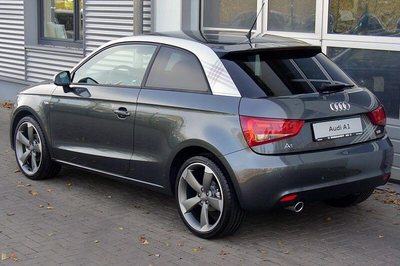

The Audi A1 (internally designated Type 8X) is a supermini sized launched by Audi at the 2010 Geneva Motor Show. Sales of the initial three door A1 model started in Germany in August 2010, with the United Kingdom following in November 2010. A five-door version, called Sportback, was launched in November 2011, with sales starting in export markets during spring 2012.
The A1 was previewed at the 2007 Tokyo Motor Show in the form of the Audi metroproject quattro concept car.The concept seats four and features a new plug-in hybrid powertrain. With this powertrain, a 1.4 L (85.4 cu in) 148 bhp (110.4 kW) Turbo FSI engine drives the front wheels via a six-speed S-Tronic, while a 40 bhp (29.8 kW; 40.6 PS) electric motor provides power to the rear wheels. The electric motor is also capable of producing 148 lb⋅ft (201 N⋅m) of torque. The metroproject quattro is able to travel 62 miles (100 km) at up to 62 mph (100 km/h) on one charge of its lithium-ion batteries, which reduces fuel consumption by up to 15%. Both power sources are available to use simultaneously, with the driver then benefiting from MacPherson strut front and rear four-link suspension configuration, electromechanical speed-sensitive power steering with a low energy draw, Audi magnetic ride adaptive damping technology, and 0 to 100 km/h (0 to 62 mph) in 7.8 seconds.
Photo: Metroproject Quattro Front.
At the 2008 Leipzig Auto Mobil International show, Audi again presented the metroproject quattro, renamed the A1 Project Quattro.The vehicle was designed by Audi AG Project Designer in Exterior Design Jürgen Löffler, who also presented the design during the car's Hong Kong debut.
The A1 Sportback concept is a five-door hatchback based on the Audi A1 project quattro, with longer body of 3.99 m (157.09 in), 1.4-litre TFSI engine rated at 150 PS (110 kW; 148 hp) at 5,500 rpm and 240 N⋅m (177.01 lb⋅ft) at 1,600-2,400 rpm, S tronic dual-clutch transmission, electric motor rated at 27 PS (20 kW; 27 hp) and 150 N⋅m (110.63 lb⋅ft) driving the front wheels, ESP-controlled active front differential lock, lithium-ion batteries, a two-part spoiler with a striking centre groove integrated into the rear window, Daytona Grey body colour, aerodynamically designed single-frame grille, LED three-dimensional main headlights, turbine-look air vents and air conditioning controls, drive select with dynamic and sport modes, contrasting white and red interior colour scheme, mobile phone WLAN connection, Audi drive select with efficiency mode, MacPherson front suspension and four-link independent rear suspension, 18-inch wheels with 225/35R18 tires, 312 mm (12.28 in) diameter brake discs, electromechanical steering with speed-sensitive power assistance, magnetorheological shock absorbers from Audi R8 and Audi TT. The vehicle's 0 to 100 km/h (0 to 62 mph) acceleration is 7.9 seconds and average CO2 emissions are given as 92g/km. The vehicle's electric-only range is 50 km (31.07 mi).The vehicle was unveiled at the 2008 Paris Motor Show.
Photo: Audi A1 Sportback Concept at the 2008 Paris Motor Show.
The A1 three-door went on sale in most markets in late 2010 following the launch at Wörthersee Tour 2010. followed by the major public launch at the 2010 Paris Motor Show. Taiwan models went on sale in 2011-02-24. Early models include 1.4 TFSI (122PS) Ambition/Attraction. A1 Sport (185PS) was added in August 2011.The car is aimed mostly at young, affluent urban buyers.
The five-door version of Audi A1, called "Sportback" by Audi, was unveiled at the 2011 Tokyo Motor Show.
The A1 uses a MacPherson strut front and torsion beam rear suspension. In the UK, the A1 trim levels are SE, Sport and S line. SE is the base specification, while Sport and S line models also have sport seats, sports suspension and larger wheels, amongst other features.
The A1 was produced at Audi's Belgian factory in Forest, near Brussels. The A1 is based on the Volkswagen Group PQ25 platform, the same platform used in the SEAT Ibiza Mk4 and the VW Polo Mk5, and in its development Audi has collaborated with SEAT. A version of 2011 Audi A1 painted by Damien Hirst was sold for £350,000. As of 23 June 2011, the 100,000th A1 was produced at Audi Brussels plant.
A1 "competition kit" (Amalfi White) with 1.6 TDI engine, A1 "Follow Me" (Citrus Yellow) with 1.4 TFSI engine, A1 "Wasserwacht" (Suzuka Gray) with 1.4 TFSI engine, A1 "FC Bayern" (Misano Red) with 1.6 TDI engine, A1 "Pickerljäger" (Ibis White) with 1.6 TDI engine, A1 "Fashion" (Aubergine) with 1.6 TDI engine, A1 "Hot Rod" (Daytona Gray) with 1.4 TFSI were unveiled in Wörthersee Tour 2010.
The A1 e-tron is a series plug-in hybrid (PHEV), with UQM PowerPhase Select 125 electric motor and controller rated 45 kW (61 PS; 60 bhp) continuous output and peak output of 75 kW (102 PS; 101 bhp). A fully charged 12 kWh lithium-ion battery gives a maximum range of 50 km (31 mi), after which a 254 cc Wankel engine is used to power a 15 kW (20 PS; 20 bhp) generator with a 12 L (2.6 imp gal; 3.2 US gal) fuel tank. This is estimated to provide an additional range of 124 mi (200 km). The company claims the car weighs 1,190 kg (2,624 lb), can reach 62 mph (100 km/h) in 10.2 seconds and a maximum speed of 80 mph (129 km/h). The vehicle was unveiled at the 2010 Geneva Motor Show, followed by the 2012 Taipei Motor Show.
Photo:Audi A1 e-tron
It is a version of the Audi A1 with a modified version of the Audi RS 3's 2.5 TFSI engine rated at 503 PS (370 kW) at 2500–5300 rpm and 660 N⋅m (486.79 lb⋅ft), tailpipe located on the left flank in front of the rear wheel, six-speed manual transmission and quattro on-demand all-wheel drive from Audi TT RS, 255/30 low-profile tires, 19-inch alloy wheels with unique turbine design, ventilated carbon fiber-ceramic front brake discs with six-piston calipers, rear steel brake discs, Glacier White matt body colour, roof arch in high-gloss black, carbon fiber-reinforced polymer roof, four rings at the front of the car in solid aluminum, single-frame radiator grille with black honeycomb design, headlights with matted clasps with a red 'wing', air outlets in the hood, front fenders and doors and the rear side panels widened by 60 mm (2.36 in) in horizontal "blister" edges (from Audi Ur-quattro), trim strips on the sills are made of exposed CFRP, side mirrors in Audi R8 design, roof spoiler with a double wing, darkly toned rear lights, single closed rear diffuser, rear seat replaced by a crossbar, weight-optimized starter battery in the rear below the two storage compartments, removal of infotainment system and Audi MMI monitor and loudspeaker, CFRP bucket seats from Audi R8 GT, red four-point seat belts, dark gray interior, matt-finished CFRP at the walls in the rear section of the car, the tubes of the air vents and the "stern of the yacht" in the lower section of the center console; CFRP open-spoked sport steering wheel upholstered in leather, rocker switches on the center console replace switches on the control stalk and in the door panels, 3 additional instruments indicate the oil pressure, boost pressure and electrical system voltage; center console and seats covered in fine leather upholstery with tone-on-tone stitching, selector lever is made of aluminum, caps of the pedals and the surface of the footrest made of stainless steel, red loops replacing the handles on the doors, the glove box and the covers of the storage compartments. This car is capable of 0 to 100 km/h (0 to 62 mph) acceleration in 3.7 seconds. The vehicle was unveiled in Wörthersee Tour 2011. Parts shown in Audi A1 clubsport quattro were sold as part of the accessories program for the A1 family, with adhesive film decals in the contrasting colors Amalfi White, Ice Silver, metallic and Daytona Gray, pearl effect for the vehicles' shoulders available immediately. Other options included union square lifestyle kit (exterior decals and design elements for the interior, both with a diamond pattern), roof spoiler competition kit. The union square lifestyle kit are painted either in the body color or in a contrasting color.
It is a limited (333 units) version of the Audi A1 with 2.0 TFSI engine rated at 256 PS (188 kW; 252 hp) at 6000 rpm and 350 N⋅m (258.15 lb⋅ft) at 2500-4500 rpm, six-speed transmission, electronic differential lock, 8.0Jx18 Glacier White cast alloy wheels in exclusive turbine design, 225/35-series tires, 312 mm (12.28 in) diameter front brake discs, black calipers, ESP stabilization program with a sport mode, Glacier White metallic body colour, roof in high-gloss black, frame and grate of the single-frame grille in high-gloss black, curved bars in the headlights – the wings – in red, grille, roof arch and the rear hatch with quattro badges; tinted rear windows, black rear hatch and diffuser, tinted LED rear lights, exhaust system with two polished dual tailpipes on the left and the right, black interior, seats and armrests on the doors are in Silk Nappa leather with contrasting red seams, front S sport seats with bolsters, multi-way adjustment, integrated head restraints and a quattro badge on the backrest covers; lower section of the center console in high-gloss black, footrest and the pedal caps made of brushed stainless steel, red seams floor mat frame, door sill trims with A1 quattro badges, instrument cluster with white needles, red tachometer, quattro logo, color display for the driver information system; leather-wrapped flat bottom multifunction sport steering wheel with contrasting red stitching and the car's serial number, shift lever knob made of aluminum, control elements with aluminum-look finish.The vehicle went on sale in the second half of 2012.
Photo:Audi A1 quattro
This model is a special edition in America. The model is known for its prints, striking on the sides, trunk and lateral mirrors (wine color) in addition to its elegant finishes in air conditioning exits, door handles, center console and mats. matching the same prints that surround the car (in wine color). The Audi A1 2012 model features a large engine, the 1.4 liter turbocharged FSI, which generates 122 hp (91 kW) and torque of 200 N⋅m (148 lb⋅ft). This engine can be coupled to two options of gearbox, a S Tronic of 7 speeds, this last one counts in all the versions with pallets of changes behind the steering wheel. Its traction is forward.
Photo:Audi A1 union square
Available for the A1 and A1 Sportback (1.2 TFSI 86PS, 1.4 TFSI 122PS and 1.6 TDI 105 PS), they are versions of the A1 S line for the UK market, with choice of 4 body colours (Ice Silver, Phantom Black, Misano Red or Glacier White colour) with metallic or pearl-effect paint finishes, gloss black finish (3-door) or fully gloss black (Sportback) contrasting roof line, gloss black door mirror housings, xenon headlamps with distinctive LED daytime running lights, Black styling package (a gloss finish for the single frame front grille surround, a matt black finish for the grille, fog light surrounds and number plate holder), 17-inch 'five V-spoke' or no-cost optional 'five-arm' design alloy wheels with a bi-colour finish, interior air vents sleeves in body colour (gloss black for Ice Silver and Phantom Black body colour car), part-leather sports seats, three-spoke S line sports steering wheel. The Black Edition (available for 1.4 TFSI cylinder on demand, 1.4 TFSI (185PS), 2.0 TDI (143PS)) is based on S line trim level, with 18-inch titanium finish alloy wheels, 180-watt Audi sound system, privacy glass and electronic climate control.